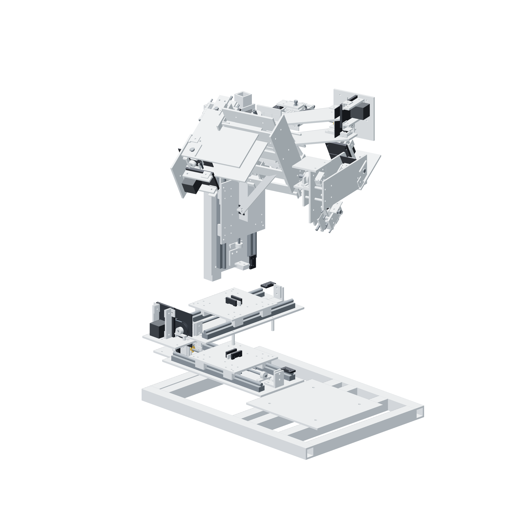

Before assembly05 / 179
Build in this order
Prove the inexpensive interfaces first. Add the gun only after the guides, transmission and independent retention are assembled.

| Group | What closes this dependency |
|---|---|
| Preparation | Coupon, printed parts, metal blanks, hubs and cut stock |
| Transmission | Six supported screw drives and captured overload links |
| Structure | Common base, X/Y/Z guides, yaw/pitch/roll gimbal |
| Retention | Three friction retainers, crash release and independent catch |
| Control | Metered power, drivers, loops, firmware and fault checks |
| Observation | Two retracting camera stages and lens cassettes |
| Dry commissioning | Loaded retention, actual response and repeated dry laps |
Ready when
A tube is removed and laser emission is disabled during initial assembly and retention checks. Adding a vessel before the loaded fault sweep is accepted can put it inside the mechanism's fall path. Keep the work area empty.